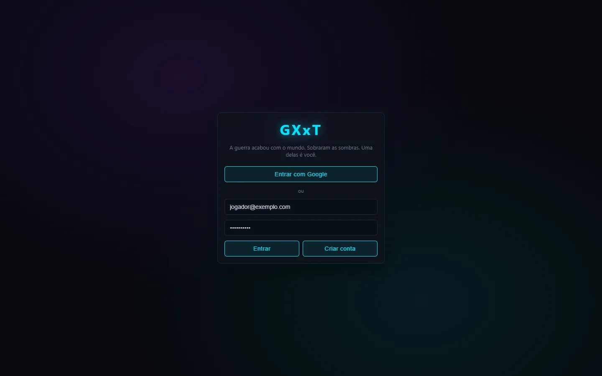
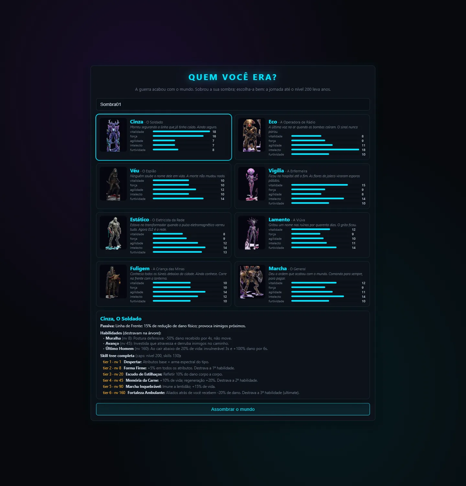
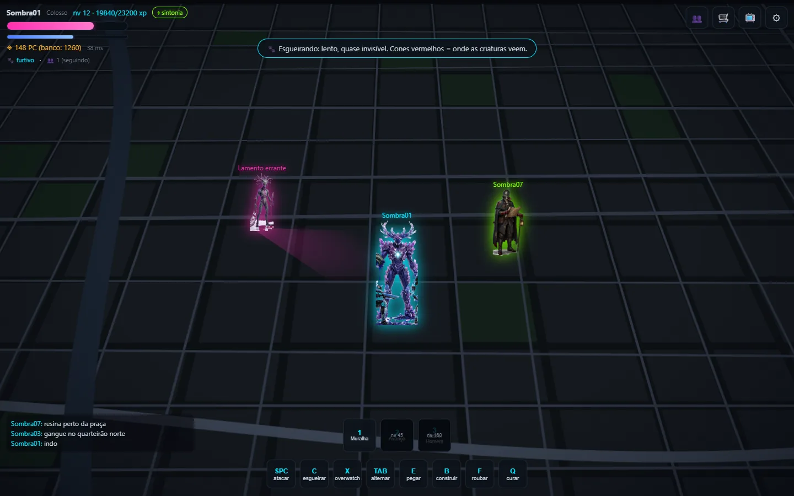
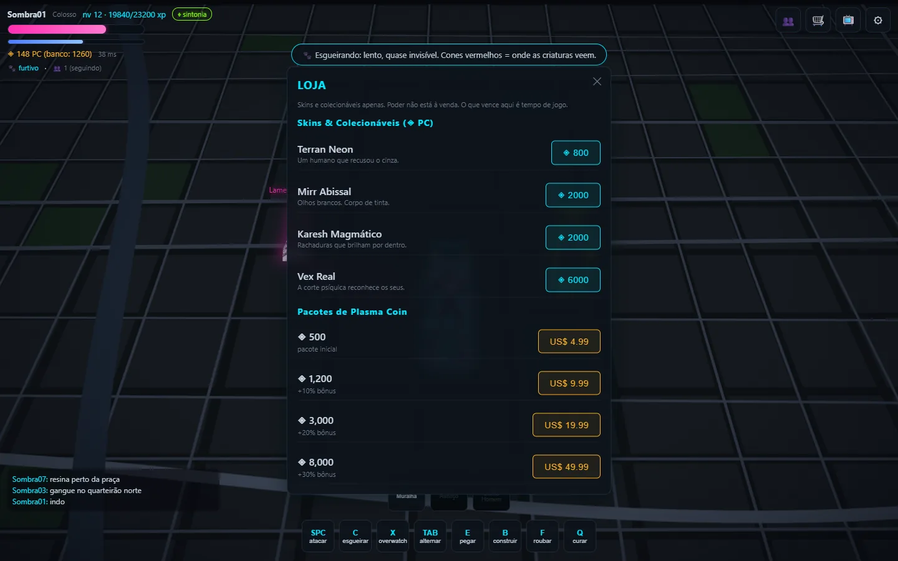
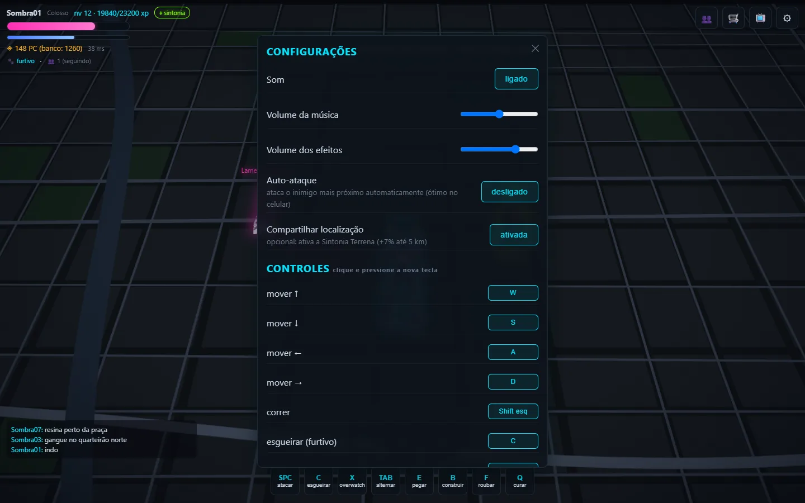

PortfólioAplicativos, jogos e automação
GXxT
Jogo online em tempo real sobre o mapa do mundo. O jogador escolhe um dos 8 tipos de fantasma, coleta recursos, constrói e disputa território. Dia e noite seguem a posição do sol no ponto do mapa onde o personagem está.
- Tipo
- Produto próprio, em desenvolvimento
- Plataforma
- Navegador, com empacotamento para celular
- Servidor
- Autoritativo, WebSocket
- Monetização
- Somente itens visuais
Telas
Telas reproduzidas a partir do código do cliente (HTML e CSS do jogo, mesmos textos). O mapa de fundo é desenhado; no jogo ele vem de blocos de ruas reais em 3D.










Fluxo do jogador
As configurações e as teclas ficam no perfil do jogador e seguem para qualquer aparelho.
Funcionalidades
- Mapa do mundoBlocos de ruas reais desenhados em 3D. 1 unidade do jogo vale cerca de 1 metro.
- Ciclo solarDia e noite pela elevação do sol na longitude e latitude do personagem. Criaturas têm período ativo: dia, noite ou sempre.
- Sintonia TerrenaOpcional. Até 5 km da localização real do jogador, todos os atributos sobem 7%.
- Furtividade e overwatchEsgueirar reduz a velocidade a 45%. Criaturas veem num cone de cerca de 110 graus. Em overwatch, o primeiro tiro de reação causa 1,5 vez o dano.
- Progressão longaNível máximo 200 com curva cúbica. Habilidades sobem por uso até 130.
- Construção6 blocos (muros, portão, seteira, chão de espinhos), gravados para todos os jogadores.
- EconomiaMoeda Plasma Coin. Taxa de 2% no mercado e perda de 10% das moedas carregadas ao morrer. Toda transação vai para um livro de registro.
Os 8 fantasmas
Soldado, operadora de rádio, espião, enfermeira, eletricista, viúva, criança das minas e general. Cada tipo tem passiva, 3 habilidades (níveis 8, 45 e 160) e árvore de 6 níveis.
Atributo mais alto de cada tipo (os 5 atributos somam 56 em todos)
Valores de packages/shared/src/ghosts.ts, races.ts e classes.ts.
Arquitetura
Situação
itens do roteiro concluídos: identidade, fantasmas, progressão, mapa, ciclo solar, habilidades e hordas
itens pendentes, entre eles equipamento, missões, gangues 2.0 e monetização
pacotes de moeda, de US$ 4,99 a US$ 49,99